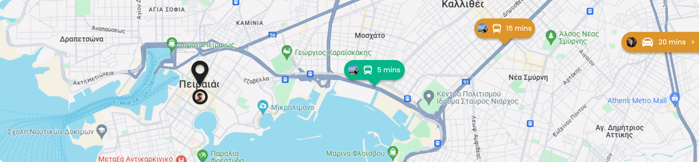
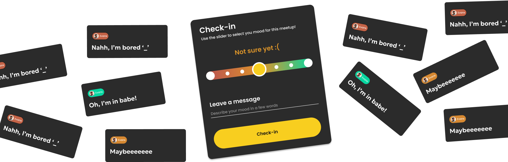
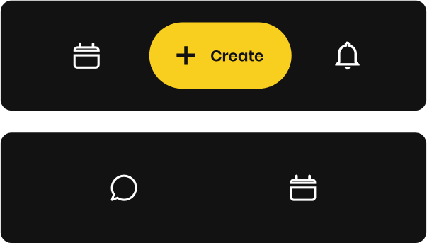

Share your live location üëÄ
Let your friends know where you are and how much time will it take to
arrive

Compete for the 1st place!
Gather Activity Points by being active to earn exclusive Perks!

Your mood out loud
Let your friends know where you are and how much time will it take to
arrive

Behind the Project

Problem
This app helps groups organize meetups orderly.
Organizing a meetup through chat can become very tedious
when everyone proposes their own thing. Some people don’t respond
at all, some work and don’t show up at all. The group chat is
flooded with questions and you scroll endlessly to find the one
picture your friend took of you.
Solution
Together is the visual interpretation of a group chat. Instead of
long messages and constant scrolling, your friend group can now
see everything at a glance when organizing a meetup. Just propose
and let everyone else express their opinion, within their own time
frame.
Influence: Social Media
Social networks have become an integral part of the daily lives of a
large population of people around the world. But not everyone belongs
to the same category. According to the Pew Research Center, users over
the age of 30 prefer to use Facebook and YouTube more than Snapchat
and Tiktok which seems to appeal to younger generations. Accordingly,
the use of social networks decreases as people age. In the United
States of America, 84% of young people aged 18-29 say they use social
networks on a daily basis, while only 45% of people over 65 seem to do
the same. (Atske, 2021)
According to this data, some conclusions can be drawn regarding the
general character of social networks and what needs they cover. Some
social networks, such as Facebook and Twitter, were launched during
the first years of public availability of the Internet. Consequently,
the rules, both functional and design, have adapted to the times and
the available technology. Initially, they were aimed at a young
audience with few tools and customisation options while trying to
become known and enter the everyday life of the average user by
creating a new habit. However, as technology evolved, new platforms
emerged, taking advantage of new technologies. To compensate for its
share of the global market, Facebook introduced more and more features
too often, leading to the phenomenon of Social Media Fatigue. Users,
overwhelmed by a very high pressure, started to get tired and sought
new simpler platforms such as Snapchat (Bright et al., 2015)
But why were these platforms left behind? The key elements they
focused on were few but clear and new-to-market tools and a simple
user experience. Companies understood that young and relaxed users
bring in much more revenue than existing users, so they started to
create new platforms that were clearly targeting new generations.
Fresh colours, soft movements and interesting typography were the main
means of attracting the interest of the new generations. In addition,
they started to follow the laws of user experience, rules that set the
basis for the maximum user experience of an application. Nowadays,
creating an application was not just in the hands of one or a group of
developers but needed a special new approach related to the user's
satisfaction while using the application. (Frier, 2021)
User Peronsas

The Competitor
This type of person is the life of the party. They will attend every
meetup you create and will be the first to organize everything from
a simple night out to a house party with dozens of guests. They want
a way to organize their meetups as they are so many, they often lose
track.

The Lone Wolf
This type of person doesn’t go out that much, has a small friend
group but makes every moment count. They value small gatherings and
making memories. They need a place to inform their friends of their
rare meetups and make sure they don’t forget.

The Couch Potato
You usually find this person sleeping. It doesn’t matter if you call
them, text them, show up at their house, they will always have an
excuse to why they don’t answer. Their friends need a way to hang
out with them, this type of person can get very funny and open once
surrounded by people!
DESIGN
Screens
UX Tactic: Dynamic Navigation Bar
Each page has a set of specific important functions that due to
the information hierarchy cannot be integrated into a dropdown
menu or submenu
There are no pages that need to be accessible from any screen at
any time
+ An always accessible menu adapted according to the page
Dropped in later designs due to unnecessity.

Meetup Screen Sequence
Goal-Gradient Effect
“Provide a clear indication of progress in order to motivate users to
complete tasks.”
lawsofux.com
Promotion
Character
The character of the promotion of an application is influenced both
by the target audience and the design choices of its identity. In
Together, as the target is a young audience, the use of humor and
directness is chosen in order to express a freer spirit which also
follows the brand identity of the product. The content of the
promotional applications initially describes in a few words a
problem which, depending on the medium, may be accompanied by a
complementary image. The solution is then proposed through a
function of the application and finally the viewer is invited to
install the application, as the final purpose of the promotion. In
general, the advertising of the app is largely aimed at raising the
emotional awareness of the viewers, a successful practice often used
in the world of promotion.
Typography
The rules of typography change in relation to the digital
application as the promotional media are governed by different
operational rules and have a different end goal. In promotion, the
information hierarchy wishes to communicate a problem and then
propose a solution in that order while intensifying the user's
attention so that the promotional medium is both perceived and
understood.
Color
In promotional applications, colour has a strong role in terms of
aesthetics and attractiveness. attractiveness. As in the digital
application, the combination of dark tones with yellow gives a
intensity through contrast and attracts the viewer's eye. Finally,
the colour palette remains simple since it is complemented by the
image element creating a complete aesthetic and colourful
environment
Promotion
The choice of promotion is related to the nature of the digital
applications and the audience to which they are targeted audience.
For this reason, specific choices have been made, such as the bus
stop or the metro, places where young people are more likely to be
moving around and other media such as magazine advertisements are
not used. The use of other media such as magazine advertisements has
not been used as young people are not familiar with these media. In
addition, the character and content of the advertisements was
adapted to each medium in order to the maximum readability and
clarity of the information. Thus, in the subway advertisements, no
space is allocated to the The advertisements in the metro ads did
not use images, but only icons and a photo of a mobile phone in
order to make it immediately accessible to the public. that the
advertised product is a digital application. Images tend to create
visual noise and to such an extent as in the case of the metro it
was considered that it would be difficult to read of the other
information in the advertisement
Another approach was taken by online advertising. As the time a user
spends looking at advertisements is minimal, the advertised product
should be so clear that it can be recognized at first glance in a
fraction of a second. Thus, in this case too, the use of images was
not used, but rather the direct presentation of the application
screens was preferred.
The use of humour
Humour is an integral part of Together’s advertising campaign and it
is heavily based on its targeted age group. It is a fresh approach
that really captivates the freedom and youthfulness that comes with
the street language spoken by the young people and works as an
effective means of getting closer to their needs and way of
living.
In the billboard example, the sign writes:” ‘I’ll be here in 5
minutes’ - None ever even believed it“, which is a very common
phrase when organizing a meetup. Using an annoying situation that
happens very often as a problem, implies that the advertized
product, in this case the app, can help deal with it or reverse it.
Consequently, by utilizing a common oral everyday phrase, Together
is able to communicate its purpose, without writing exactly how it
helps, inviting the ad spectator to dive more into the product.
Conclusion
Together is a digital application that wants to solve a problem that
is faced on a daily basis, the inability to organize meetings
between friends. Through specific tools and validated design
practices, it leaves nothing to chance but adapts its user
experience according to its users and according to the laws of UX.
All design elements have been used to maximize usability that will
ultimately contribute to the success of the app. In addition, the
design identity is completed through the promotional applications
which aim to promote the application through the most appropriate
ways and the most ideal means.
Resources Used
• Atske, S. (2021, April 7). Social media use in 2021. Pew Research
Center. https://www.pewresearch.org/
internet/2021/04/07/social-media-use-in-2021/
• Bean, D. (2019,
March 6). The dark side of dark mode: Is the latest app trend sucking
the life out of our screens? Observer.
https://observer.com/2019/03/dark-mode-app-trend-psychological-effects/
• Bright, L. F., Kleiser, S. B., & Grau, S. L. (2015). Too much
Facebook? An exploratory examina tion of social media fatigue. Computers
in Human Behavior, 44, 148–155. https://doi.org/10.1016/j.
chb.2014.11.048
• Cuello, J., & Vittone, J. (2013). Designing
mobile apps. José Vittone. https://books.google.
gr/books?hl=en&lr=&id=nQBJAQAAQBAJ&oi=fnd&pg=PA11&dq=visual+language+in+mobile+apps&ots=yvr8PCDyAo&sig=zsuYwIeSy9gpJRCX9WQf6Mth2lE&redir_esc=y#v=onepage&q=visu
al%20language%20in%20mobile%20apps&f=false Frier, S. (2021).
• No
filter: The inside story of instagram. Simon and Schuster.
•
Maybray, B. (2023, July 11). Color Psychology: How To Use it in
Marketing and Branding. HubSpot.
https://blog.hubspot.com/the-hustle/psychology-of-color
• Wheeler,
A. (2017). Designing Brand Identity: An essential guide for the whole
branding team. John Wiley & Sons.
• Yablonski, J. (n.d.-a). Design
principles for reducing cognitive load. Laws of UX.
https://lawsofux.com/
articles/2015/design-principles-for-reducing-cognitive-load/
•
Yablonski, J. (n.d.). Home. Laws of UX. Retrieved July 2, 2024, from
https://lawsofux.com/
• Zhang, J., Sagar, S., & Shihab, E. (2013,
August 19). The evolution of mobile apps: An exploratory study.
Proceedings of the 2013 International Workshop on Software Development
Lifecycle for Mobile. http:// dx.doi.org/10.1145/2501553.2501554